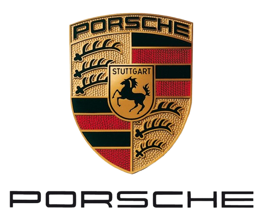

Porsche 911 GT3Performances et consommation de la Porsche 911 GT3
La Porsche 911 GT3 est équipée d'un moteur flat-six atmosphérique de
4 litres développant 510 chevaux, directement issu de la
compétition. Elle accélère de 0 à 100 km/h en environ 3,4 secondes
et atteint une vitesse maximale de 320 km/h.
En termes de consommation, la GT3 affiche une moyenne homologuée
d'environ 13 L/100 km en cycle mixte. Disponible avec boîte PDK ou
manuelle à 6 rapports, elle reste l'une des versions les plus
radicales et orientées circuit de la gamme 911.